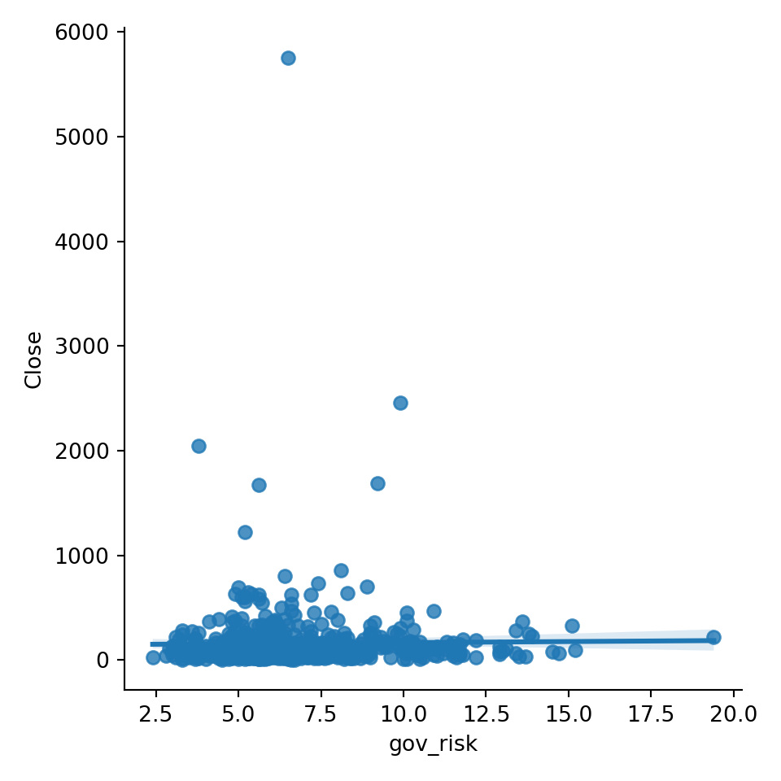

import numpy as np
import pandas as pd
import seaborn as sns
import yfinance as yfDANL210 Project
Stock Performance vs Ethical Performance
1 Introduction
This project will address the relationship between Environmental, Governance, and Social (ESG) risk ratings and stock performance. ESG risk ratings evaluate a company’s ethical performance and how well they manage risks and opportunities in environmental, social, and governance areas. Given this, I will be able to analyze the relationship between stock performance and ethical performance. All data was collected from Yahoo Finance.
2 Data
tickers_history = pd.read_csv("tickers-hist.csv")
esg_data = pd.read_csv("esg.csv")esg_data = esg_data.rename(columns={'0': 'total-esg', '0.1': 'enviro_risk', '0.2':'social_risk', '0.3':'gov_risk', '0.4':'controversy'})2.1 Variable Description
2.1.1 esg_data
total_esg: Total ESG rating. Environmental, social, and government risk ratings combined.
enviro_risk: Environmental risk rating.
social_risk: Social risk rating.
gov_risk: Governmental risk rating.
controversy: Controversy level.
3 Descriptive Statistics
3.1 Summary Statistics
esg_data['enviro_risk'].describe()count 537.000000
mean 5.827188
std 5.301806
min 0.000000
25% 1.800000
50% 4.000000
75% 9.000000
max 27.300000
Name: enviro_risk, dtype: float64esg_data['social_risk'].describe()count 537.000000
mean 9.042644
std 3.612652
min 0.800000
25% 6.700000
50% 8.900000
75% 11.100000
max 22.500000
Name: social_risk, dtype: float64esg_data['gov_risk'].describe()count 537.000000
mean 6.811173
std 2.378037
min 2.400000
25% 5.200000
50% 6.300000
75% 7.900000
max 19.400000
Name: gov_risk, dtype: float64tickers_history['Close'].describe()count 357202.000000
mean 142.152567
std 297.241789
min 0.980000
25% 40.449798
50% 81.209999
75% 152.080002
max 8099.959961
Name: Close, dtype: float64tickers_history['High'].describe()count 357202.000000
mean 143.808907
std 300.607248
min 1.060000
25% 40.966236
50% 82.190002
75% 153.830002
max 8158.990234
Name: High, dtype: float64tickers_history['Low'].describe()count 357202.000000
mean 140.424490
std 293.761505
min 0.780000
25% 39.901238
50% 80.220911
75% 150.270004
max 8010.000000
Name: Low, dtype: float64Merge the data frames esg_data and tickers_history in order to compare:
merged_df = pd.merge(esg_data, tickers_history, left_index = True, right_index = True, how = 'inner')Distribution of Close:
sns.histplot(merged_df['Close'])Distribution of Environmental Risk Rating:
sns.histplot(merged_df['enviro_risk'])4 Exploratory Data Analysis
4.1 Correlation Heat Map of ESG Data:
import matplotlib.pyplot as plt
corr = esg_data.corr()
plt.figure(figsize=(8,6))
sns.heatmap(corr, annot=True, cmap='coolwarm', fmt='.2f', linewidths = .5)
plt.title('Correlation Heatmap of ESG Data')
plt.show()4.2 Relationship between Close Price and Environmental Risk Score:
sns.lmplot(merged_df, x = 'enviro_risk', y = 'Close')
There is not much correlation between Close Price and Environmental Risk Score. Our scatter plot and best fit line are relatively flat. If anything, there is a slight positive relationship. Higher risk might mean a higher close price, however, we cannot make a conclusion from this.
4.4 Finally, relationship between Close Price and Government Risk Score:
sns.lmplot(merged_df, x = 'gov_risk', y = 'Close')
Once again, there is not much correlation between the two. Like environmental risk, there could be a slight positive relationship. As risk increases, so does close price. However, we cannot conclude this.
5 Conclusion
There may be somewhat of a relationship between stock performance, such as a company’s Close Price, and ethical performance. However, more research is needed. A conclusion can not be reached simply from Yahoo Finance. There are also other factors besides risk ratings that affect stock performance. Examples include macroeconomic conditions, industry trends, and company financials.
6 Significance
It is important for companies to pay attention to their own ethical and stock performance and how the two interact. Companies that perform well in ESG ratings may be able to achieve long term sustainability in their business. Long term sustainability may in turn attract new investors and minimize risk. In addition, they can use ESG ratings to see how well they are handling risks and opportunities. This may give companies a competitive edge.